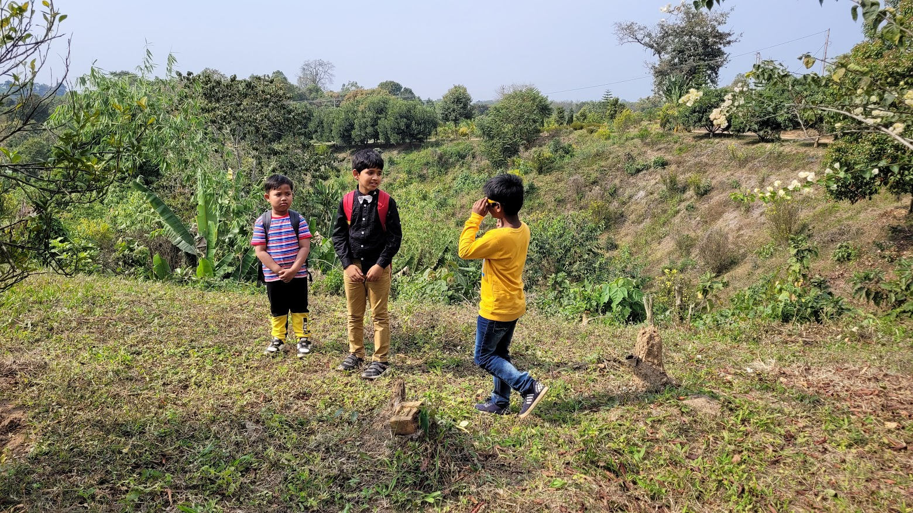
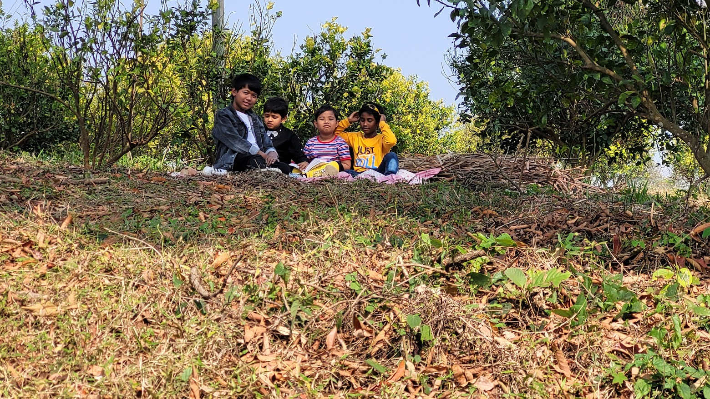

Have you ever seen precious and vulnerable birds in their natural habitat? Miraculously, I have! Let me tell you the tale.
One day in the day of Swaraswati Puja, I overheard my parents and my friends’ parents excitedly discussing a picnic. It was to be held in a large lemon orchard in Baramura. Me and my friends Dabbhai, Sonal Dada, Naisumai and our families were to go there. Naisumai’s father, who first proposed the picnic site and also owned the orchard, informed us that, there was one massive, ancient tree on the slope nearby the edge of orchard, on which the hornbills had nested and could also be sighted on some rare occasions.
We travelled along many roads to reach the orchard. I was on the edge of my seat and supremely excited throughout the journey. There was a path on which we walked to reach the lemon orchard. The orchard of lemon, sweet lime and some other plants spread over a vast area on slopes was a lovely place located at the foothills of Baramura hill range. On a slope opposite to our picnic hill, there was a sea of green trees. In the orchard a cool fragrant breeze was gently blowing. A heavy scent of sweet lime hung in the air.
|  |  |
|---|---|
| Exploring the edges | Waiting for hornbills |
After a lunch of chicken, rice and pork, my friends Dabbhai, Sonal Dada, Naisumai and I settled down to look for hornbills. We laid a rosy-pink cloth near the ancient, mammoth tree of which Naisumai’s father spoke of and squatted down on it. The ground was covered with pebble, twigs and dead leaves. We had brought my pair of binoculars and some bananas and oranges to eat. We waited for some hours which seemed like six millenniums to us; we were so excited. We were feeling miserable and munching on bananas when suddenly I spotted an Oriental Pied Hornbill settling on a branch of the ancient tree. We beheld it’s black plumage, yellow casqued beak and pale blue eye patch for a fleeting moment. Then it flapped away in the direction of the slope with the green trees on the opposite hills, letting out a series of croaking, cackling calls as it went. Grabbing my field-guide "Birds of the Indian Subcontinent" by Richard Grimmett the classification and species of the hornbill was confirmed as Oriental Pied Hornbill, I noted it down on my bird-watching diary.
Even today I cannot forget this once-in-a-lifetime experience.

Oriental Pied Hornbill (IMAGE CURTSY google-photos)